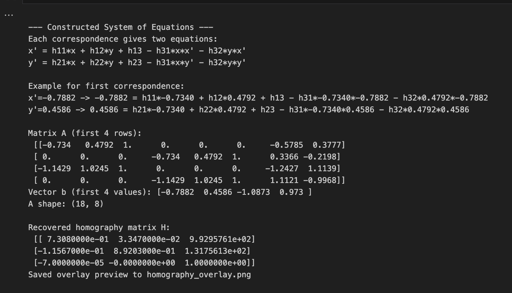
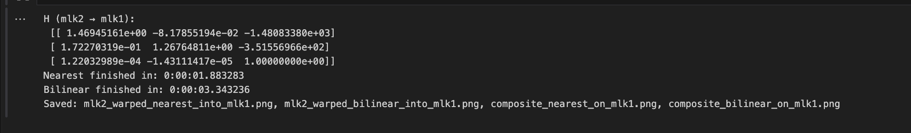
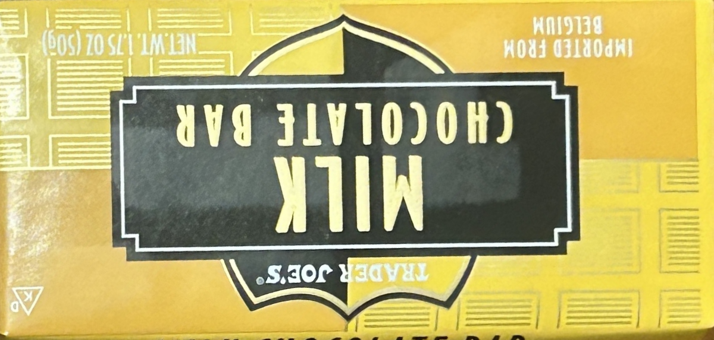
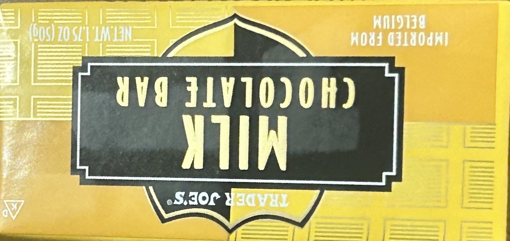
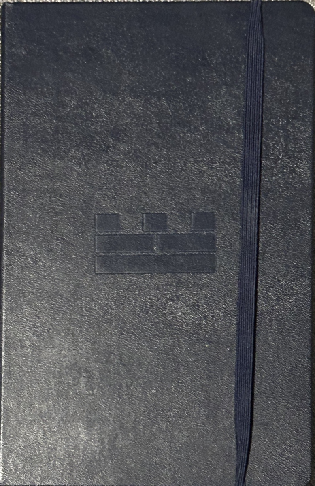
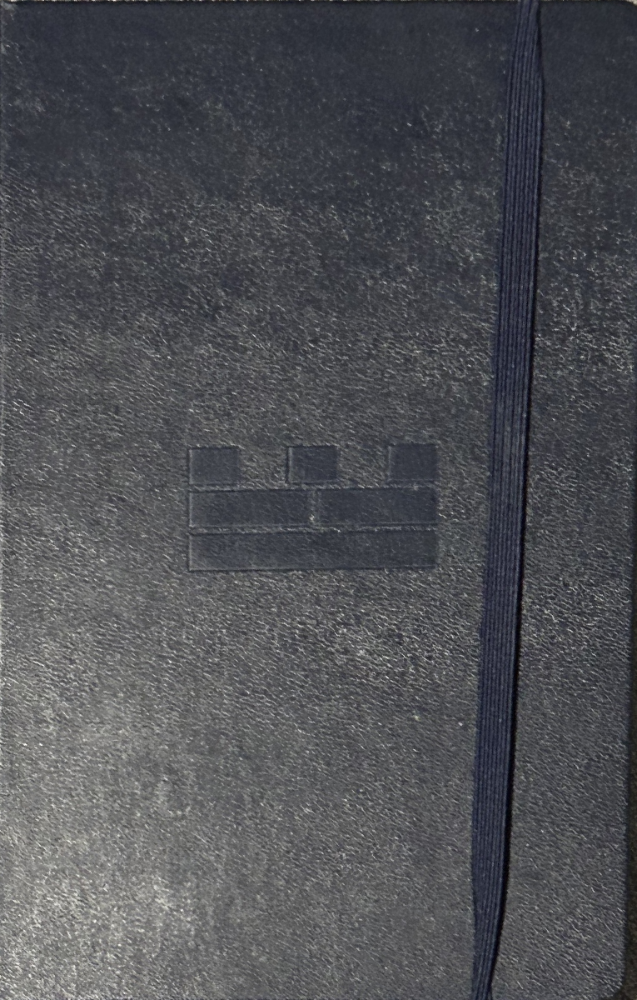
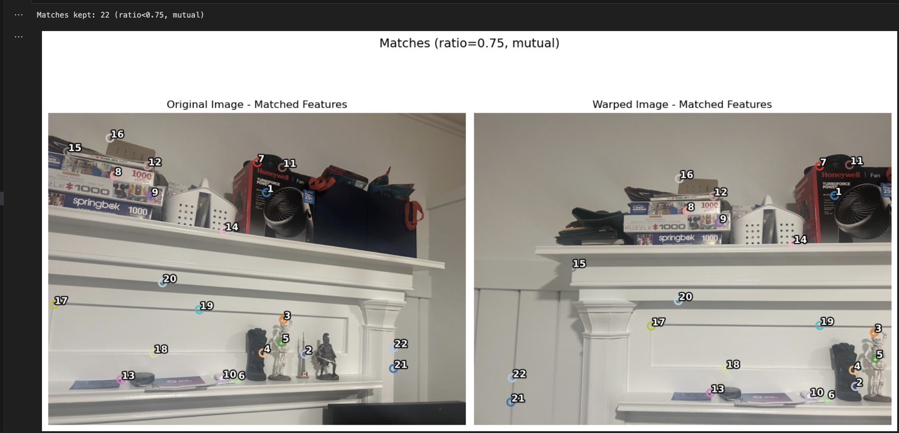

In this project, I built a pipeline to do image warping and mosaic two images together.
I began by capturing overlapping photos of a scene, then compute a homography between image pairs using point correspondences and a normalized least-squares solution.
With this homography, I implemented inverse warping using custom nearest-neighbor and bilinear interpolation functions to rectify and align images.
Finally, I blended the warped images into a seamless mosaic using weighted averaging and methods such as Laplacian pyramid blending to minimize ghosting and edge artifacts, producing smooth and visually coherent panoramas.
Later, in part B of the project, I created automatic mosaics using Harris Corner Detection, ANMS, Feature extraction and matching, and RANSAC.
Part A.1
Shoot the Pictures
In this part, I took three sets of images with a projective transformation between them. I did this by fixing the center of projection and rotating my phone camera slightly so that
around 50-70% of the scene overlapped.
Most of these images are of fixed objects and there aren't many moving components. You can find the three pairs of images below:
In this part, I used least squares estimation to determine a homography matrix H that maps points from one image to another.
I began by collecting at least four pairs of corresponding points between two overlapping images through my own interactive point-selection interface.
To improve numerical stability, I normalized both point sets by translating them to the origin and scaling them so that their average distance from the origin was sqrt(2).
Using these normalized coordinates, I constructed a linear system Ah = b, where h contains the eight unknown parameters of the homography.
I then solved this overdetermined system using np.linalg.lstsq() to minimize the least-squares error. The resulting normalized homography was denormalized and scaled so that H[2,2] = 1.
To verify that the method worked correctly, I printed the system dimensions, showed sample rows of A and b, and visualized the selected correspondences side by side.
Finally, I applied the computed homography to warp one image onto the other using OpenCV’s warpPerspective for a preview and saved the blended overlay result.
This helped me confirm that my implementation successfully recovered and validated the projective transformation between the two input images.
Below, you can see the correspondences visualized, some of my systems of equations and the recovered homography matrix.
1. Correspondences Visualization MLK

2. Systems And Homography Matrix MLK
Below, we can see the initial homography overlay of image 1 warped onto image 2 using OpenCV's warpPerspective()
3. Initial Warp Test MLK
Part A.3
Warp the Images
In Part A3, I implemented the actual image warping step using the homography I recovered in the previous part. My goal was to take the source image and map it into the coordinate system of the reference image using inverse warping, which avoids holes in the output. I wrote two interpolation methods from scratch: nearest-neighbor and bilinear interpolation. The first, nearest-neighbor interpolation, rounds each back-projected pixel coordinate to the nearest integer location in the source image. This produces a blocky but fast result. The second, bilinear interpolation, computes a weighted average of the four neighboring pixels based on each pixel’s fractional position, resulting in smoother and more visually accurate output.
To perform the warping, I first computed the inverse of the homography so I could back-map every pixel from the destination (reference) image to where it originated in the source. For each pixel in the output grid, I transformed its coordinates with the inverse homography, checked whether the point fell within image bounds, and then applied either nearest-neighbor or bilinear interpolation to assign the new color value. I also created helper functions for homogeneous coordinate transformations and bounds checking, and again visualized the point correspondences between the images.
Finally, I tested my implementation by warping mlk2.jpg into the coordinate frame of mlk1.jpg, timing both interpolation methods and saving the warped and composite results.

1. Time Comparison of NN vs Bilinear
2. Bilinear Warping MLK 3. NN Warping MLK
4. Bilinear Composite MLK 5. NN Composite MLK
6. Bilinear Warping Room 7. NN Warping Room
8. Bilinear Composite Room 9. NN Composite Room
If you zoom in, you can see that the warped image from nearest-neighbor is less smooth, whereas bilinear produces a higher quality alignment that is more "smooth".
Additionally, we see that the nearest-neighbor method is almost 2x faster than the bilinear interpolation method. Furthermore, I include some composite images that show
my warped image overlaid onto the other, reference image to visualize how well the warped result aligns with my target scene.
Next, we can take a look at some rectification examples. I used the homography framework to make a tilted rectangular object actually appear rectangular.
I manually selected the four corners of the rectangle in the image, ordered them, and estimated their real-world rectangular proportions by measuring
average side lengths and scaling the rectangle so that the longest side fits within a set maximum (1200 pixels) while preserving the aspect ratio.
Then, I computed a homography that maps this quadrilateral to a perfectly rectangular grid and warped the image using either nearest-neighbor or bilinear interpolation.
This resulted in rectified images where the selected plane appears flat and undistorted, confirming that my warping and homography functions work correctly.
1. Original Chocolate

2. Bilinear Rectified Chocolate

3. NN Rectified Chocolate
4. Original Notebook

5. Bilinear Rectified Notebook

6. NN Rectified Notebook
Again, we can notice some differences in the output of the bilinear interpolation method and the nearest-neighbor method. We can especially see the difference in the image of the chocolate bar.
Taking a look at the text on the bar in both images, we see that the nearest neighbor warped image has much blockier text, while the bilinear chocolate bar is a lot smoother.
Part A.4
Blend the Images into a Mosaic
In this part, I built a seamless mosaic by registering and blending two overlapping images using a computed homography.
I began by warping the second image into the coordinate system of the reference image so that their overlapping regions aligned geometrically on a shared canvas.
To determine the proper output size, I projected all image corners through their homographies and used the resulting bounding box to create a canvas large enough to contain both warped images.
I then applied a translation matrix to shift all coordinates into positive space, ensuring that every pixel from both images was visible.
For blending, I first implemented feathered averaging, where I created smooth alpha masks from the distance transform of valid pixels.
These masks assign high weights to the center of each image and gradually fade toward the edges, which allows overlapping regions to transition softly instead of forming sharp seams.
To further improve visual quality, I extended this approach with a two-level Laplacian pyramid blend.
This method separates each warped image into low-frequency (color and illumination) and high-frequency (edges and textures) components, blends them separately using feathered masks, and then recombines them.
This multi-band approach effectively preserves detail while minimizing brightness differences and ghosting near high-contrast boundaries.
The resulting mosaics demonstrate smooth blending, sharp edges, and consistent exposure between overlapping areas, producing a visually coherent mosaic.
1. MLK 1 2. MLK 2
3. MLK Mosaic
4. Room 1 5. Room 2
6. Room Mosaic
7. TV 1 8. TV 2
9. TV Mosaic
Most of these mosaics look pretty good with minimal ghosting! The MLK mosaic still needs some more improvement. Although I selected many point correspondences (10-12), I don't think I selected
all of them accurately and due to the image's many features and components, there remains some misalignment.
Part B.1
Harris Corner Detection
I converted each RGB image to grayscale floats and computed the Harris response using corner_harris with the eps method and sigma 1.5.
I then picked candidate corners via peak_local_max using a 90th-percentile threshold and a min_distance of 12, and I discarded detections within 20 pixels of the image borders.
I overlayed these raw Harris corners on the original images to visualize the detections.
Next, I applied Adaptive Non-Maximal Suppression which involved sorting corners by strength, computing each point’s radius to the nearest sufficiently stronger neighbor using c_robust set to 0.95, and keeping the top 200 by radius.
After plotting the ANMS-filtered corners, I saw a much more spatially uniform and distinctive set of keypoints.
As we can see, there are a ton of very clustered points for the non-ANMS harris method. When we do use ANMS, we see a very nice spread-out distribution of points.
Part B.2
Feature Descriptor Extraction
I started from the ANMS keypoints and converted the images to grayscale floats in the 0 to 1 range.
For each keypoint, I sampled a 40 by 40 window using reflected padding, applied a Gaussian blur, and then downsampled to an 8 by 8, axis aligned patch.
I flattened each patch and bias and gain normalized it by subtracting the mean, dividing by the standard deviation, and L2 normalizing to produce a stable descriptor.
I returned both the normalized feature descriptors and the kept keypoint locations along with the raw 8 by 8 patches.
I then saved and displayed several sample patches to visualize the extracted features, and wrote a feature descriptor matcher with a ratio test for use in B.3 and B.4.
We can see 6 extracted features and their locations in the original image for both images!
Part B.3
Feature Matching
I computed pairwise descriptor distances and, for each feature in image A, I found its first and second nearest neighbors in image B.
I applied Lowe’s ratio test by keeping matches whose nearest distance divided by the second-nearest was below my threshold (0.75), which rejected ambiguous matches.
Then, I enforced mutual consistency by requiring that each kept pair be each other’s best match in the opposite direction and visualized the resulting correspondences by drawing indexed points on each image.

1. Initial Room Feature Matching
In the next part, I'll show how the matched features changed after using RANSAC. I'll also include the matched point diagrams for all the images I ended up using in my final mosaics.
Part B.4
RANSAC for Robust Homography
I started from the ratio-test matches and filtered to points that lay well inside both images.
Afterwards, I implemented 4 point RANSAC: on each iteration I sampled four matches, estimated a homography, computed forward reprojection error, and marked inliers with a pixel threshold (usually 3-4).
I used an adaptive iteration cap based on the current inlier rate and refit the homography on all inliers when enough were available.
Then I visualized only the inlier correspondences and warped the second image into the first using the RANSAC homography to produce the automatic mosaic.
Below, we can see comparisons of my automatic mosaics with my manual stitches. Note that some of my images are different than what I originally used in Part A since I found prettier ones :)
We can see that the automatic mosaics tend to be a bit better, especially on some of the image pairs that have a ton of parts. The flowers images were notoriously difficult to manually pick out
point correspondences and create a manual mosaic. I think the automatic mosaic was much more crisp and well-aligned for the flowers and courtyard images. We see slight improvement for the room images as well
but not as much. I think the primary reason for these disparities is not due to the algorithms but rather the human error involved in mapping correspondences in complex images.
Overall, I'm really happy with the results! I think there are certain parts of the images with a little blur despite my use of feathering and/or a laplacian blend but it's quite minimal.